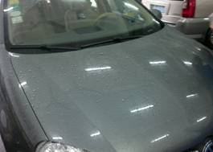
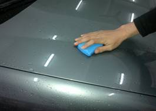
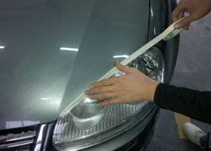
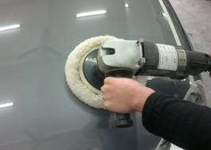
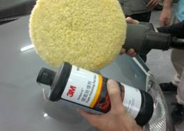
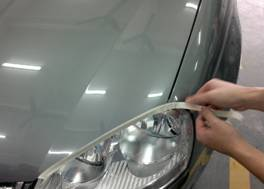

当前位置：首页 > 实训项目与考核 > 实训项目清单
项目流程
表7 汽车漆面封釉护理的流程
| 环节 | 项目 | 具体程序 | 操作目的及 注意事项 | 作业示意图 |
|---|---|---|---|---|
| 1 | 清洗车身 | 1）用中性清洗剂将车身漆面冲洗干净。 | 操作目的： 1）清洗漆面封尘及细沙粒 |
 |
| 2 | 黏土打磨 | 1）将黏土轻轻擦拭车身。 | 操作目的： 1)对车身进行全面打磨处理 |
 |
| 3 | 遮盖橡胶件 | 1）用纸胶带把车身上的所有橡胶件，以及车标、字母等都粘贴起来。 | 操作目的： 1）防止沾上釉后难以清理 |
 |
| 4 | 振抛封釉 | 1）用封釉机将釉保护剂通过振动挤压进入漆面的毛孔中，使药剂渗进车漆内发生还原变化，达到增艳的效果。 | 注意事项： 1）封釉后不要急于擦洗漆面 |
 |
| 5 | 无尘打磨 | 1）用无尘纸和波浪棉轻抛漆面，也称镜面处理 | 注意事项： 1）操作需要在无尘车间进行 |
 |
| 6 | 清理 | 1）将遮盖的纸胶带等撕掉，并用无尘纸处理干净被粘贴表面。 | 注意事项： 1）检查各个细节部位，保证工作圆满完成 |
 |
上一页 1 2 3 4 5 6 7 8 下一页